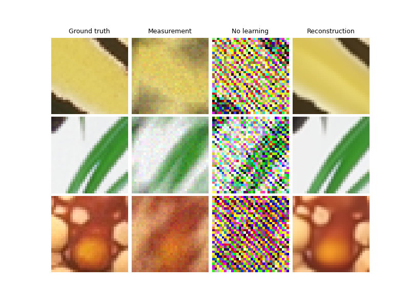
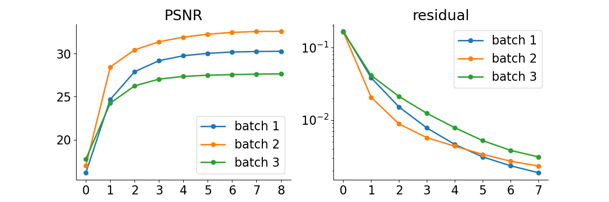

Note
Go to the end to download the full example code.
DPIR method for PnP image deblurring.
This example shows how to use the DPIR method to solve a PnP image deblurring problem. The DPIR method is described in the following paper: Zhang, K., Zuo, W., Gu, S., & Zhang, L. (2017). Learning deep CNN denoiser prior for image restoration. In Proceedings of the IEEE conference on computer vision and pattern recognition (pp. 3929-3938).
import deepinv as dinv
from pathlib import Path
import torch
from torch.utils.data import DataLoader
from deepinv.models import DRUNet
from deepinv.optim.data_fidelity import L2
from deepinv.optim.prior import PnP
from deepinv.optim.optimizers import optim_builder
from deepinv.training import test
from torchvision import transforms
from deepinv.optim.dpir import get_DPIR_params
from deepinv.utils.demo import load_dataset, load_degradation
Setup paths for data loading and results.
BASE_DIR = Path(".")
ORIGINAL_DATA_DIR = BASE_DIR / "datasets"
DATA_DIR = BASE_DIR / "measurements"
RESULTS_DIR = BASE_DIR / "results"
DEG_DIR = BASE_DIR / "degradations"
Load base image datasets and degradation operators.
In this example, we use the Set3C dataset and a motion blur kernel from Levin et al. (2009).
# Set the global random seed from pytorch to ensure reproducibility of the example.
torch.manual_seed(0)
device = dinv.utils.get_freer_gpu() if torch.cuda.is_available() else "cpu"
# Set up the variable to fetch dataset and operators.
method = "DPIR"
dataset_name = "set3c"
img_size = 128 if torch.cuda.is_available() else 32
val_transform = transforms.Compose(
[transforms.CenterCrop(img_size), transforms.ToTensor()]
)
# Generate a motion blur operator.
kernel_index = 1 # which kernel to chose among the 8 motion kernels from 'Levin09.mat'
kernel_torch = load_degradation("Levin09.npy", DEG_DIR / "kernels", index=kernel_index)
kernel_torch = kernel_torch.unsqueeze(0).unsqueeze(
0
) # add batch and channel dimensions
dataset = load_dataset(dataset_name, ORIGINAL_DATA_DIR, transform=val_transform)
Levin09.npy degradation downloaded in degradations/kernels
Downloading datasets/set3c.zip
0%| | 0.00/385k [00:00<?, ?iB/s]
100%|██████████| 385k/385k [00:00<00:00, 22.8MiB/s]
set3c dataset downloaded in datasets
Generate a dataset of blurred images and load it.
We use the BlurFFT class from the physics module to generate a dataset of blurred images.
noise_level_img = 0.03 # Gaussian Noise standard deviation for the degradation
n_channels = 3 # 3 for color images, 1 for gray-scale images
p = dinv.physics.BlurFFT(
img_size=(n_channels, img_size, img_size),
filter=kernel_torch,
device=device,
noise_model=dinv.physics.GaussianNoise(sigma=noise_level_img),
)
# Use parallel dataloader if using a GPU to fasten training,
# otherwise, as all computes are on CPU, use synchronous data loading.
num_workers = 4 if torch.cuda.is_available() else 0
n_images_max = 3 # Maximal number of images to restore from the input dataset
# Generate a dataset in a HDF5 folder in "{dir}/dinv_dataset0.h5'" and load it.
operation = "deblur"
measurement_dir = DATA_DIR / dataset_name / operation
dinv_dataset_path = dinv.datasets.generate_dataset(
train_dataset=dataset,
test_dataset=None,
physics=p,
device=device,
save_dir=measurement_dir,
train_datapoints=n_images_max,
num_workers=num_workers,
)
batch_size = 3 # batch size for testing. As the number of iterations is fixed, we can use batch_size > 1
# and restore multiple images in parallel.
dataset = dinv.datasets.HDF5Dataset(path=dinv_dataset_path, train=True)
Dataset has been saved in measurements/set3c/deblur
Set up the DPIR algorithm to solve the inverse problem.
This method is based on half-quadratic splitting (HQS).
The algorithm alternates between a denoising step and a data fidelity step, where
the denoising step is performed by a pretrained denoiser deepinv.models.DRUNet.
Note
We provide a wrapper for rapidly creating the DPIR algorithm in deepinv.optim.DPIR.
# load specific parameters for DPIR
sigma_denoiser, stepsize, max_iter = get_DPIR_params(noise_level_img)
params_algo = {"stepsize": stepsize, "g_param": sigma_denoiser}
early_stop = False # Do not stop algorithm with convergence criteria
# Select the data fidelity term
data_fidelity = L2()
# Specify the denoising prior
prior = PnP(denoiser=DRUNet(pretrained="download", device=device))
# instantiate the algorithm class to solve the IP problem.
model = optim_builder(
iteration="HQS",
prior=prior,
data_fidelity=data_fidelity,
early_stop=early_stop,
max_iter=max_iter,
verbose=True,
params_algo=params_algo,
)
# Set the model to evaluation mode. We do not require training here.
model.eval()
BaseOptim(
(fixed_point): FixedPoint(
(iterator): HQSIteration(
(f_step): fStepHQS()
(g_step): gStepHQS()
)
)
)
Evaluate the model on the problem.
The test function evaluates the model on the test dataset and computes the metrics.
save_folder = RESULTS_DIR / method / operation / dataset_name
plot_convergence_metrics = True # Metrics are saved in save_folder.
plot_images = True # Images are saved in save_folder.
dataloader = DataLoader(
dataset, batch_size=batch_size, num_workers=num_workers, shuffle=False
)
test(
model=model,
test_dataloader=dataloader,
physics=p,
metrics=[dinv.metric.PSNR(), dinv.metric.LPIPS(device=device)],
device=device,
plot_images=plot_images,
save_folder=save_folder,
plot_convergence_metrics=plot_convergence_metrics,
verbose=True,
)
- 
- 
Loading pretrained model LPIPS from /home/runner/.cache/torch/hub/pyiqa/LPIPS_v0.1_alex-df73285e.pth
2024-11-13 14:03:26,304 INFO: Network [LPIPS] is created.
2024-11-13 14:03:26,305 INFO: Metric [LPIPS] is created.
0%| | 0/1 [00:00<?, ?it/s]
Test: 0%| | 0/1 [00:00<?, ?it/s]
Test: 0%| | 0/1 [00:01<?, ?it/s, PSNR=30.2, PSNR no learning=4.19, LPIPS=0.00378, LPIPS no learning=0.402]
Test: 100%|███████████████████████████████████| 1/1 [00:01<00:00, 1.81s/it, PSNR=30.2, PSNR no learning=4.19, LPIPS=0.00378, LPIPS no learning=0.402]
Test: 100%|███████████████████████████████████| 1/1 [00:01<00:00, 1.81s/it, PSNR=30.2, PSNR no learning=4.19, LPIPS=0.00378, LPIPS no learning=0.402]
Test results:
PSNR no learning: 4.187 +- 1.447
PSNR: 30.165 +- 2.016
LPIPS no learning: 0.402 +- 0.134
LPIPS: 0.004 +- 0.003
{'PSNR no learning': np.float64(4.186646143595378), 'PSNR no learning_std': np.float64(1.4468237274226996), 'PSNR': np.float64(30.16461435953776), 'PSNR_std': np.float64(2.0164958180264647), 'LPIPS no learning': np.float64(0.4024091561635335), 'LPIPS no learning_std': np.float64(0.1336401602927466), 'LPIPS': np.float64(0.0037754916896422706), 'LPIPS_std': np.float64(0.002592722410522517)}
Total running time of the script: (0 minutes 2.991 seconds)